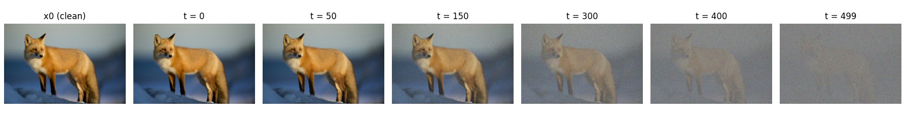
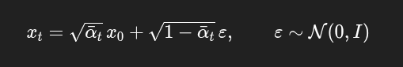
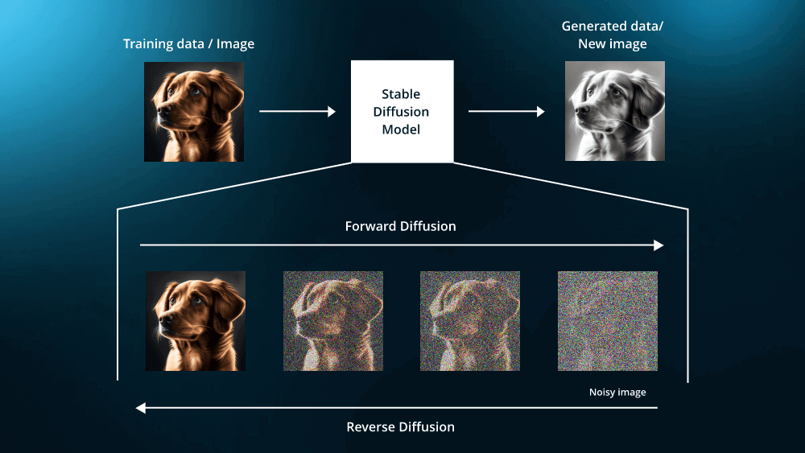
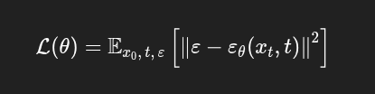
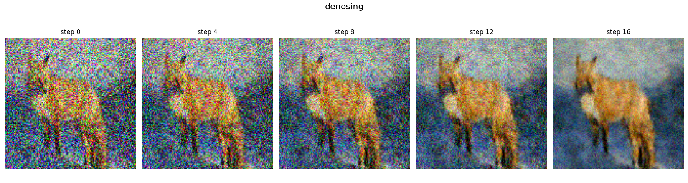

Diffusion Models and Backpropagation Explained
Diffusion models are a class of generative models that learn to generate data by reversing a gradual corruption process. Instead of trying to produce a complex image in one step, they frame generation as a sequence of small denoising steps. The core idea is that if we can systematically add noise to data until it becomes random, we can train a model to learn how to undo that noise step by step. This turns image generation into a tractable, iterative process rather than a single hard prediction.
The forward pass in a diffusion model defines this corruption process. Starting from a clean image, small amounts of Gaussian noise are added at each timestep, slightly degrading the image. As timesteps increase, more signal is destroyed and the image becomes increasingly noisy. After enough steps, the image is indistinguishable from pure noise. Importantly, this forward process is fixed and does not involve learning.
As the timestep increases, the signal-to-noise ratio decreases in a controlled manner defined by the noise schedule. Early timesteps preserve most of the image structure, while later timesteps are dominated by noise. This gradual corruption ensures that the transition from data to noise is smooth, which is crucial for training a stable reverse process later on.

Mathematically, the forward process constructs a noisy image xt from the original image x0 using the equation shown in Figure 2, where ε is sampled from a standard normal distribution. The term ᾱt represents how much of the original signal is retained after t timesteps, and it decreases as t grows. This formulation is especially useful because it allows sampling a noisy image at any timestep directly from the original image, without simulating all intermediate noise additions.

Once the forward process has transformed data into noise, the goal of training is to learn how to reverse this process. Since the forward pass is fixed and non-learnable, all learning happens in the reverse direction. Backpropagation is used to train a neural network that can infer how much noise is present in a noisy image at a given timestep. This learned mapping is what enables the model to gradually undo the corruption introduced during the forward pass.
Instead of predicting the original clean image directly, the network is trained to predict the noise that was added at each timestep. Given a noisy image and its timestep, the model outputs an estimate of the injected noise, and backpropagation minimizes the error between the predicted and true noise. Learning this simpler, local objective is more stable than full reconstruction and provides a reliable denoising direction that can be applied repeatedly during the reverse process.

From a mathematical perspective, x0 represents the original clean image, while xt is the noisy version of that image at timestep t, obtained through the forward diffusion process. The symbol ε denotes the Gaussian noise that was added to the image, sampled from a standard normal distribution. The neural network, written as εθ(xt, t), takes the noisy image and its timestep as input and predicts the noise that should be present at that step. The loss measures the squared difference between the true noise and the predicted noise, and backpropagation updates the parameters θ so that the network becomes increasingly accurate at predicting noise across different timesteps.

Training is performed by minimizing the mean squared error between the true injected noise and the noise predicted by the network. Since the forward process explicitly adds known Gaussian noise, the target is always available during training. This objective is simpler and more stable than directly predicting the clean image, especially at high noise levels where reconstruction would be ambiguous.
Gradients are computed by backpropagating the noise prediction error through the network parameters. This allows the model to adjust its weights so that, given a noisy image and its timestep, it produces a more accurate estimate of the underlying noise. Over many training steps, gradient descent shapes the network into a function that captures how noise behaves at different noise levels.
Once trained, the network’s noise predictions define a local denoising direction at each timestep. By repeatedly applying these learned denoising steps in reverse order, the model gradually transforms noise into structured images. Although perfect reconstruction requires large models and substantial compute, this training procedure establishes the core mechanism that makes diffusion-based generation possible.
My implementation: I implemented this training procedure from scratch on a single fox image, optimizing the noise-prediction network for approximately 15,000 training steps. The model successfully learns to denoise and recover structure step by step, but reaching full sharpness would require larger models and more compute than available here. The result below demonstrates the diffusion process working correctly, even under constrained resources.

Diffusion models work by turning generation into a sequence of simple denoising problems learned through backpropagation. Even with limited compute, this implementation demonstrates how structure can emerge from noise when the forward and reverse processes are correctly defined. Scaling model capacity and compute would further improve detail, but the underlying diffusion mechanics remain the same.